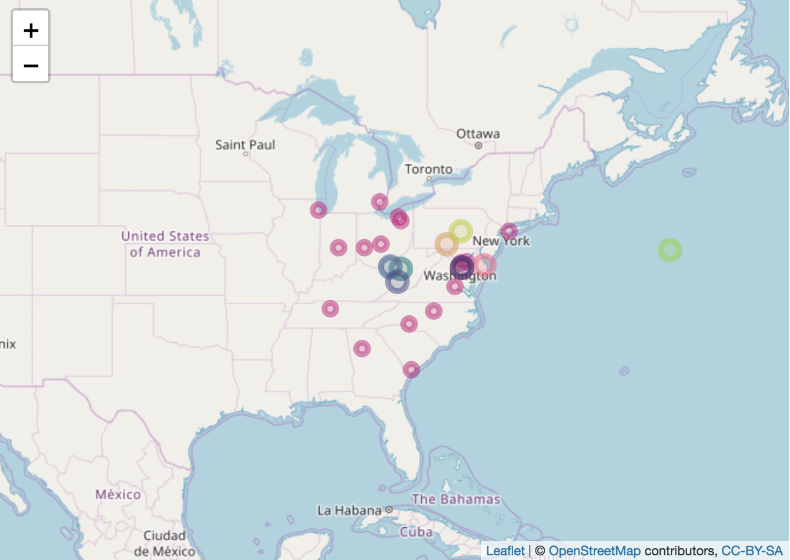

Jul 2, 2018
Software 📦
CRAN:  GitHub:
GitHub: 
New packages
- A new version (
v2.1.0) ofphylogramis on CRAN - a tool for developing phylogenetic trees as deeply-nested lists known as “dendrogram” objects. Check out the vignette to get started. This is not the first version on CRAN - but it just completed our software review process and is now in the rOpenSci family - welcome Shaun!

- A new version (
v1.2.2) ofskynetis on CRAN - A flexible tool that allows generating bespoke air transport statistics for urban studies based on publicly available data from the Bureau of Transport Statistics (BTS) in the United States. Check out the skynet vignette to get started. This is not the first version on CRAN - but it just completed our software review process and is now in the rOpenSci family - welcome Filipe!
Releases
- A new version (
v5.2.1) ofdrakeis on CRAN - A Pipeline Toolkit for Reproducible Computation at Scale. Check out the drake docs to get started.
tests changes
- A new version (
v0.3.0) ofbrranchingis on CRAN - grab plant phylogenies from Phylomatic. See the release notes for changes. Check out the brranching README to get started.
new fxn bladj 🌲 - crul now for http requests
- A new version (
v0.2.0) ofgoogleLanguageRis on CRAN - call Google’s Natural Language, Cloud Translation, Cloud Speech and Cloud Text-to-Speech API’s. See the release notes for changes. Check out the googleLanguageR docs to get started.
new example Shiny app for Speech API, new fxn gl_talk() for Google text to speech
- A new version (
v0.8.4) ofelasticis on CRAN - the best R client for Elasticsearch. See the release notes for changes. Check out the elastic vignettes to get started.
new fxn docs_bulk_update, many docs_bulk fixes/improvements
- A new version (
v0.8.0) ofbiomartris on CRAN - genomic data retrieval with R. See the biomartr NEWS for changes. Check out the biomartr docs to get started.
new fxn getCollection, lots of new functionality in existing functions
- A new version (
v1.1) ofcld3is on CRAN - bindings to Google’s Compact Language Detector 3. See the cld3 NEWS for changes. Check out the cld3 README to get started. - A new version (
v0.4.2) ofgistris on CRAN - work with GitHub gists API from R. See the release notes for changes. Check out the gistr vignette to get started.
better failure behavior; gist() can now fetch a specific revision
Software Review ✔
We accept community contributed packages via our onboarding system - an open software review system, sorta like scholarly paper review, but way better. We’ll highlight newly onboarded packages here. A huge thanks to our reviewers, who do a lot of work reviewing (see the blog post on our review system), and the authors of the packages!
If you want to be a reviewer fill out this short form, and we’ll ping you when there’s a submission that fits in your area of expertise.
The following four packages recently went through our onboarding process and have been approved!
- skynet > Generates Networks from Bureau of Transport Statistics Data
- Author: Filipe Teixeira
- Issue: ropensci/onboarding#214
- Reviewers:
- jstor > Functions and helpers to import metadata and full-texts delivered
by Data for Research (DfR) by JSTOR
- Author: Thomas Klebel
- Issue: ropensci/onboarding#189
- Reviewers:
- phylogram > Dendrograms for Evolutionary Analysis
- Author: Shaun Wilkinson
- Issue: ropensci/onboarding#212
- Reviewers:
- rppo > R functions to access Plant Phenology Ontology annotated datasets
- Author: John Deck
- Issue: ropensci/onboarding#207
- Reviewers:
The following three packages were recently submitted:
- DataPackageR > Construct Reproducible Analytic Data Sets as R Packages
- Author: Greg Finak
- Issue: ropensci/onboarding#230
- Reviewers:
- smapr > Acquisition and Processing of NASA Soil Moisture Active-Passive (SMAP) Data
- Author: Maxwell Joseph
- Issue: ropensci/onboarding#231
- Reviewers:
- restez > Create and Query a Local Copy of GenBank in R
- Author: Dom Bennett
- Issue: ropensci/onboarding#232
- Reviewers: not assigned yet
On the blog
rOpenSci Unconference
There will be a series of posts from teams at our recent rOpenSci Unconference. Here’s the first:
The roomba team (Amanda Dobbyn, Jim Hester, Laura DeCicco, Christine Stawitz, Isabella Velasquez) wrote about their roomba package: A package for tidying nested lists
Software Review / Onboarding
We’re excited to announce two new editors for rOpenSci software review: Anna Krystalli and Lincoln Mullen. Read the details: Announcing new software review editors: Anna Krystalli and Lincoln Mullen.
rOpenSci HQ
Chat with the rOpenSci team at upcoming meetings - check out where various rOpenSci team members will be. We’d love to chat with you.
Use cases
The following 14 works use/cite rOpenSci software:
- Venkat wrote a thesis citing tabulizer: Sub-basin Valuation of Agriculture: A Crop-specific Assessment of Groundwater Footprints and Value in California 1
- Jaspers et al. cited aRxiv, rbhl, rcrossref, rdatacite, and rplos in their paper Machine learning techniques for the automation of literature reviews and systematic reviews in EFSA 2
- Lawrence cited our plotly R package in their paper Linking Traditional Chinese Medicinal Herbs to Cancer Related Pathways 3
- Krogsgaard et al. cited our R package plotly in their paper Characteristics of the bacterial microbiome in association with common intestinal parasites in irritable bowel syndrome 4
- Mienna cited rgbif in their paper Patterns and Drivers of Phylogenetic Diversity and Endemism in the Norwegian Vascular Flora 5
- Morais & Bellwood cited our package rotl in their paper Global drivers of reef fish growth 6
- Schwalie et al. cited biomartr in their paper A stromal cell population that inhibits adipogenesis in mammalian fat depots 7
- Ondei et al. cited taxize in their paper Nature’s untold stories: an overview on the availability and type of on-line data on long-term biodiversity monitoring 8
- Hendrickson cited plotly in their thesis Ecological Characterization of the Kuparuk River Aufeis Field, North Slope Alaska 9
- Sanford et al. cited plotly in their paper Effect of Oscillation on Perineal Pressure in Cyclists: Implications for Micro-Trauma 10
- Mioduchowska et al. cited rentrez in their paper Instances of erroneous DNA barcoding of metazoan invertebrates: Are universal cox1 gene primers too “universal”? 11
- Casey cited tokenizers in their dissertation Text Analytics Techniques in the Digital World: a Sentiment Analysis Case Study of the Coverage of Climate Change on US News Networks 12
- Koc et al. cited plotly in their paper Specalyzer—an interactive online tool to analyze spectral reflectance measurements 13
- Devlin et al. plotly in their paper WHAM!: a web-based visualization suite for user-defined analysis of metagenomic shotgun sequencing data 14
In the news
Lorenzo Busetto wrote a blog post about a new version of his package MODIStsp
MODIStsp v. 1.3.4 is on CRAN ! Introduces an improved GUI allowing interactive definition of processing extent over a map and other tweaks (thanks @LeahAWasser @TimSalabim3 @timelyportfolio ) ! More info at https://t.co/koyFHpnaex #rstats #rspatial pic.twitter.com/kXQV9lENTJ
— Lorenzo Busetto (@lbusetto74) June 11, 2018
Adam Sparks highlights a use of his package GSODR in the wild
The first time you see the use of your #rstats package (GSODR) by someone else! Bonus points for work related to your own FOR. pic.twitter.com/eZV0IsA0SL
— Adam Sparks (@adamhsparks) June 4, 2018
Hal Snyder shared a Jupyter Notebook with use of our package rrricanes
It's hurricane season. With CoCalc, we can use R to analyze Natl Hurricane Ctr data, thanks to rrricanes pkg by @timtrice. Here's a Jupyter notebook showing 120-day forecast cone for Subtropical Storm Alberto frmo 2 PM EDT on Saturday, May 26, 2018. @rOpenSci @cocalc_com pic.twitter.com/GR9UodJXzc
— Hal Snyder (@HalDroid) June 15, 2018
Jose Vera used pdftools in a blog post
getting data from pdfs using pdftools #rstats package https://t.co/KMx41yMuzB pic.twitter.com/cxVmMXxPkW
— Jose Manuel Vera (@verajosemanuel) June 20, 2018
Lucy D’Agostino McGowan wrote a post using opencage: Bringing the family together: Finding the center of geographic points in R

Steven Mortimer wrote a blog post: Scraping responsibly with R in which he uses our package robotstxt
Keep up with rOpenSci
- Mailing list: Sign up with an email address to get this newsletter sent to your inbox -> ropensci.org/#subscribe
- Alternatively, you can subscribe to this newsletter via our XML feed at https://news.ropensci.org/feed.xml or our JSON feed at https://news.ropensci.org/feed.json
- rOpenSci on Twitter: @ropensci
- The rOpenSci blog at ropensci.org/blog - you can subscribe in any RSS aggregator, or manually via https://ropensci.org/feed.xml. We also announce new blog posts on our Twitter account.
Footnotes
-
Venkat, A. (2018). Sub-basin Valuation of Agriculture: A Crop-specific Assessment of Groundwater Footprints and Value in California (Masters thesis, Tufts University). https://search.proquest.com/docview/2054012866 ↩
-
Jaspers, S., De Troyer, E., & Aerts, M. (2018). Machine learning techniques for the automation of literature reviews and systematic reviews in EFSA. EFSA Supporting Publications, 15(6), 1427E. https://doi.org/10.2903/sp.efsa.2018.EN-1427 ↩
-
Hsu, Lawrence. 2018. Linking Traditional Chinese Medicinal Herbs to Cancer Related Pathways. Scholar Archive. 4054. https://digitalcommons.ohsu.edu/etd/4054 ↩
-
Krogsgaard, L. R., Andersen, L. O. ‘Brien, Johannesen, T. B., Engsbro, A. L., Stensvold, C. R., Nielsen, H. V., & Bytzer, P. (2018). Characteristics of the bacterial microbiome in association with common intestinal parasites in irritable bowel syndrome. Clinical and Translational Gastroenterology, 9(6). https://doi.org/10.1038/s41424-018-0027-2 ↩
-
Mienna, I. M. (2018). Patterns and Drivers of Phylogenetic Diversity and Endemism in the Norwegian Vascular Flora (Master’s thesis, NTNU). https://brage.bibsys.no/xmlui/bitstream/handle/11250/2502355/17650_FULLTEXT.pdf?sequence=1 ↩
-
Morais, R. A., & Bellwood, D. R. (2018). Global drivers of reef fish growth. Fish and Fisheries. https://doi.org/10.1111/faf.12297 ↩
-
Schwalie, P. C., Dong, H., Zachara, M., Russeil, J., Alpern, D., Akchiche, N., … Deplancke, B. (2018). A stromal cell population that inhibits adipogenesis in mammalian fat depots. Nature. https://doi.org/10.1038/s41586-018-0226-8 ↩
-
Ondei, S., Brook, B. W., & Buettel, J. C. (2018). Nature’s untold stories: an overview on the availability and type of on-line data on long-term biodiversity monitoring. Biodiversity and Conservation. https://doi.org/10.1007/s10531-018-1582-2 ↩
-
Hendrickson, P. J. (2018). Ecological Characterization of the Kuparuk River Aufeis Field, North Slope Alaska (Doctoral dissertation, University of Colorado at Boulder). https://search.proquest.com/docview/2056852840 ↩
-
Sanford, T., Gadzinski, A. J., Gaither, T., Osterberg, E. C., Murphy, G. P., Carroll, P. R., & Breyer, B. N. (2018). Effect of Oscillation on Perineal Pressure in Cyclists: Implications for Micro-Trauma. Sexual Medicine. https://doi.org/10.1016/j.esxm.2018.05.002 ↩
-
Mioduchowska, M., Czyż, M. J., Gołdyn, B., Kur, J., & Sell, J. (2018). Instances of erroneous DNA barcoding of metazoan invertebrates: Are universal cox1 gene primers too “universal”? PLOS ONE, 13(6), e0199609. https://doi.org/10.1371/journal.pone.0199609 ↩
-
Casey, Jerome (2018). Text Analytics Techniques in the Digital World: a Sentiment Analysis Case Study of the Coverage of Climate Change on US News Networks. Irish Communication Review: Vol. 16: Iss. 1, Article 7. https://arrow.dit.ie/icr/vol16/iss1/7 ↩
-
Koc, A., Henriksson, T., & Chawade, A. (2018). Specalyzer—an interactive online tool to analyze spectral reflectance measurements. PeerJ, 6, e5031. https://doi.org/10.7717/peerj.5031 ↩
-
Devlin, J. C., Battaglia, T., Blaser, M. J., & Ruggles, K. V. (2018). WHAM!: a web-based visualization suite for user-defined analysis of metagenomic shotgun sequencing data. BMC Genomics, 19(1). https://doi.org/10.1186/s12864-018-4870-z ↩